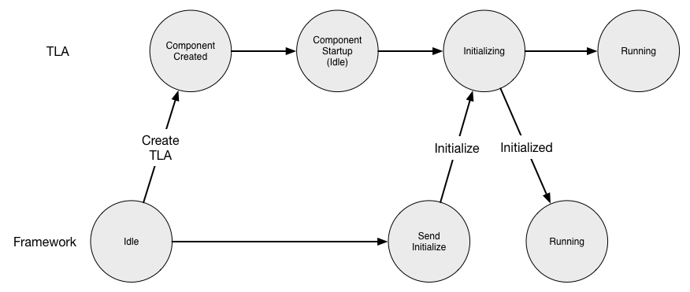

Component Handlers
A component developer creates a Top Level Actor (TLA) by inheriting from an abstract class ComponentHandlers or JComponentHandlers for Scala or Java, respectively. Each of these abstract classes provides several handler methods that can be overridden by the developer to provide component-specific code as described below.
Component Lifecycle
For each component, the CSW framework creates a Supervisor that creates the TLA, and along with the abstract behavior class provided by the framework, it starts up and initializes the component in a standardized way. At the conclusion of the startup of the component, it is ready to receive commands from the outside world. The following figure is used to describe the startup lifecycle interactions between the framework and the TLA.

initialize
As described in Creating a Component, a Supervisor is created based on the contents of the ComponentInfo file. The figure shows that the Supervisor in the framework creates the specified TLA. Once the TLA is created, the framework calls the initialize handler. This is the opportunity for the component to perform any initialization needed before it is ready to receive commands.
The implementation of the initialize handler is up to the developer. A common task will be for the component to fetch a configuration from the Configuration Service. It may also determine the location of components or services it needs from the Location Service.
The TLA indicates a successful initialize by returning normally. If it cannot initialize, the handler should throw an exception, which will be caught and logged. The Supervisor will retry the creation and initialization of the TLA three times. If it fails after three times, the Supervisor will log a message and stop.
When initialize succeeds, the Supervisor in the framework and the component itself enter the Running state. When in the Running state, commands received from outside the component are passed to the TLA (see below).
- Assembly/Scala
-
source
override def initialize(): Unit = { // Initialization could include following steps : // 1. fetch config (preferably from configuration service) val calculationConfig = Await.result(getAssemblyConfig, timeout) // 2. create a worker actor which is used by this assembly val worker: ActorRef[WorkerActorMsg] = ctx.spawnAnonymous(WorkerActor.behavior(calculationConfig)) // 3. find a Hcd connection from the connections provided in componentInfo val maybeConnection = componentInfo.connections.find(connection => connection.componentId.componentType == ComponentType.HCD) // 4. If an Hcd is found as a connection, resolve its location from location service and create other // required worker actors required by this assembly maybeConnection match { case Some(_) => resolveHcd().map { case Some(hcd) => runningHcds = runningHcds.updated(maybeConnection.get, Some(CommandServiceFactory.make(hcd)(ctx.system))) diagnosticsPublisher = ctx.spawnAnonymous(DiagnosticsPublisher.behavior(runningHcds(maybeConnection.get).get, worker)) commandHandler = ctx.spawnAnonymous(CommandHandler.behavior(calculationConfig, runningHcds(maybeConnection.get))) case None => // do something } case None => () } } - Assembly/Java
-
source
@Override public void initialize() { // fetch config (preferably from configuration service) // create a worker actor which is used by this assembly ConfigData configData; ActorRef<WorkerActorMsg> worker; try { configData = getAssemblyConfig().get(timeout, timeUnit); worker = ctx.spawnAnonymous(WorkerActor.behavior(configData)); } catch (InterruptedException | ExecutionException | TimeoutException ex) { throw new RuntimeException("Can not get config data", ex); } // find a Hcd connection from the connections provided in componentInfo Optional<Connection> mayBeConnection = componentInfo.getConnections().stream() .filter(connection -> connection.componentId().componentType() == JComponentType.HCD) .findFirst(); // If an Hcd is found as a connection, resolve its location from location service and create other // required worker actors required by this assembly, also subscribe to HCD's filter wheel event stream mayBeConnection.map(connection -> { Optional<AkkaLocation> hcdLocation; try { hcdLocation = resolveHcd().get(timeout, timeUnit); } catch (InterruptedException | ExecutionException | TimeoutException ex) { throw new RuntimeException("Can not resolve HCD", ex); } if (hcdLocation.isEmpty()) throw new HcdNotFoundException(); else { runningHcds.put(connection, Optional.of(CommandServiceFactory.jMake(hcdLocation.get(), ctx.getSystem()))); } diagnosticPublisher = ctx.spawnAnonymous(JDiagnosticsPublisher.behavior(CommandServiceFactory.jMake(hcdLocation.get(), ctx.getSystem()), worker)); return null; }); throw new RuntimeException("can not resolve connection for given HCD"); } - Hcd/Scala
-
source
override def initialize(): Unit = { // fetch config (preferably from configuration service) val hcdConfig = Await.result(getHcdConfig, timeout.duration) // create a worker actor which is used by this hcd val worker: ActorRef[WorkerActorMsg] = ctx.spawnAnonymous(WorkerActor.behavior(hcdConfig)) // initialise some state by using the worker actor created above current = Await.result(worker ? InitialState, timeout.duration) stats = Await.result(worker ? GetStatistics, timeout.duration) } - Hcd/Java
-
source
@Override public void initialize() { // fetch config (preferably from configuration service) try { hcdConfig = getConfig().get(timeout, timeUnit); } catch (InterruptedException | ExecutionException | TimeoutException ex) { throw new RuntimeException("Can not get config ", ex); } // create a worker actor which is used by this hcd worker = ctx.spawnAnonymous(WorkerActor.behavior(hcdConfig)); // initialise some state by using the worker actor created above try { CompletionStage<Integer> askCurrent = AskPattern.ask(worker, WorkerActorMsgs.JInitialState::new, Duration.ofSeconds(5), ctx.getSystem().scheduler()); askCurrent.thenAccept(c -> current = c).toCompletableFuture().get(timeout, timeUnit); CompletionStage<Integer> askStats = AskPattern.ask(worker, WorkerActorMsgs.JInitialState::new, Duration.ofSeconds(5), ctx.getSystem().scheduler()); askStats.thenAccept(s -> stats = s).toCompletableFuture().get(timeout, timeUnit); } catch (InterruptedException | ExecutionException | TimeoutException ex) { throw new RuntimeException(ex); } }
Creation Timeout
The Supervisor waits for the initialize to complete. If it times out, it will retry the creation of the TLA 3 times in the same way as with initialize failures. The timeout value is configurable by the TLA by setting the initializeTimeout value in ComponentInfo.
Location Service Interactions
Once the Supervisor and TLA are in the Running state, the Supervisor registers the component with the Location Service. This allows the component to be located so it can be contacted. Registration with Location Service happens only if locationServiceUsage in ComponentInfo is not set to DoNotRegister.
If the component has connections and locationServiceUsage in ComponentInfo is set to RegisterAndTrackServices, the framework will resolve the components and deliver TrackingEvents to the TLA through the onTrackingEvent onTrackingEvent handler.
Shutting Down
A component may be shutdown by an external administrative program whether it is deployed in a container or standalone. Shutting down may occur when the component is in the Running state, either online or offline (see below).
onShutdown
The TLA provides a handler called onShutdown that is called by the Supervisor when shutting down to give the TLA an opportunity to perform any clean up it may require, such as freeing resources.
As with initialize, there is a timeout that the framework will wait for the component to return from onShutdown. This is currently set to 10 seconds and cannot be overridden. If it does not return, it is assumed that the TLA is damaged and the TLA is destroyed immediately. After a successful return from onShutdown, the Supervisor deletes the component.
- Assembly/Scala
-
source
override def onShutdown(): Unit = { // clean up resources } - Assembly/Java
-
source
@Override public void onShutdown() { // clean up resources } - Hcd/Scala
-
source
override def onShutdown(): Unit = { // clean up resources } - Hcd/Java
-
source
@Override public void onShutdown() { // clean up resources }
Restarting
A component may be restarted by an external administrative program whether it is deployed in a container or standalone. A restart may occur when the component is in the Running state, either online or offline (see below).
A restart causes the component to be destroyed and re-created with a new TLA. The onShutdown handler is called to allow the component to tidy up before it is destroyed. Then the Supervisor creates a new TLA and the startup proceeds as with initialize above.
Component Online and Offline
Online describes a component that is currently part of the observing system that is in use. When a component enters the Running state it is also “online”.
A component is offline when it is operating and available for active observing but is not currently in use.
If a component is to transition from the online state to the offline state, the onGoOffLine handler is called. The component should make any changes in its operation for offline use.
If a component is to transition from the offline state to the online state, the onGoOnline handler is called. The component should make any changes in its operation needed for online use.
Unless implemented by the developer, there is no fundamental difference in the inherent behavior of a component when in either state. These two states provide a standard way for code to be implemented via these handlers for the transition from one state to another, allowing the component to prepare itself to be online (ready for operations) or offline (stowed or dormant). Any call to transition to a online/offline state when the component is already in that state is a no op.
However, when offline, a component should take actions that make sense when offline. For instance, it should not follow the telescope motion or take actions as if online.
isOnline
A component has access to the isOnline boolean flag, which can be used to determine if the component is in the online or offline state.
onGoOffline
A component can be notified to run in offline mode in case it is not in use. The component can change its behavior if needed as a part of this handler.
- Assembly/Scala
-
source
override def onGoOffline(): Unit = { // do something when going offline } - Assembly/Java
-
source
@Override public void onGoOffline() { // do something when going offline } - Hcd/Scala
-
source
override def onGoOffline(): Unit = { // do something when going offline } - Hcd/Java
-
source
@Override public void onGoOffline() { // do something when going offline }
onGoOnline
A component can be notified to run in online mode again in case it was put to run in offline mode. The component can change its behavior if needed as a part of this handler.
- Assembly/Scala
-
source
override def onGoOnline(): Unit = { // do something when going online } - Assembly/Java
-
source
@Override public void onGoOnline() { // do something when going online } - Hcd/Scala
-
source
override def onGoOnline(): Unit = { // do something when going online } - Hcd/Java
-
source
@Override public void onGoOnline() { // do something when going online }
Handling commands
The remaining handlers are associated with handling incoming commands. There is a handler for submit commands called onSubmit and a handler for oneway called onOneway.
This section gives an introduction to the command handlers. For more information on how to send and monitor commands, see the Communication using Commands page.
validateCommand
The validateCommand handler allows the component to inspect a command and its parameters to determine if the actions related to the command can be executed or started. If it is okay, an Accepted response is returned. If not, Invalid is returned. Validation may also take into consideration the state of the component. For instance, if an Assembly or HCD can only handle one command at a time, validateCommand should return an return Invalid if a second command is received. The Invalid returns a CommandIssue, which are a number of pre-defined reasons for failing validation. These pre-defined reasons should be used whenever possible, but there is also an OtherIssue defined.
If you run across a validation issue you think should be added to CommandIssue, please submit a ticket to the CSW maintenance JIRA page at this location.
The handler is called whenever a command is sent as a Submit, SubmitAndWait, or Oneway message to the component. If the handler returns Accepted, the corresponding onSubmit or onOneway handler is called.
This handler can also be called when the Command Service method validateCommand is used, to preview the acceptance of a command before it is sent using submit or oneway. In this case, the onSubmit or onOneway handler is not called.
- Assembly/Scala
-
source
override def validateCommand(runId: Id, command: ControlCommand): ValidateCommandResponse = command match { case setup: Setup => setup.commandName match { case `sleep` => validateSleep(runId, setup) case `immediateCommand` | `shortCommand` | `mediumCommand` | `longCommand` | `complexCommand` => Accepted(runId) case _ => Invalid(runId, UnsupportedCommandIssue(s"Command: ${setup.commandName.name} is not supported for sample Assembly.")) } case _ => Invalid(runId, UnsupportedCommandIssue(s"Command: ${command.commandName.name} is not supported for sample Assembly.")) } private def validateSleep(runId: Id, setup: Setup): ValidateCommandResponse = if (setup.exists(sleepTimeKey)) { val sleepTime: Long = setup(sleepTimeKey).head if (sleepTime < maxSleep) Accepted(runId) else Invalid(runId, ParameterValueOutOfRangeIssue("sleepTime must be < 2000")) } else { Invalid(runId, MissingKeyIssue(s"required sleep command key: $sleepTimeKey is missing.")) } - Assembly/Java
-
source
@Override public ValidateCommandResponse validateCommand(Id runId, ControlCommand command) { CommandName cmd = command.commandName(); if (command instanceof Setup) { Setup setup = (Setup) command; if (cmd.equals(sleep)) { return validateSleep(runId, setup); } if (cmd.equals(immediateCommand) || cmd.equals(shortCommand) || cmd.equals(mediumCommand) || cmd.equals(longCommand)|| cmd.equals(complexCommand)) { return new Accepted(runId); } } return new Invalid(runId, new UnsupportedCommandIssue("Command: " + cmd.name() + " is not supported for sample Assembly.")); } private ValidateCommandResponse validateSleep(Id runId, Setup setup) { if (setup.exists(sleepTimeKey)) { Long sleepTime = setup.jGet(sleepTimeKey).get().head(); if (sleepTime < maxSleep) return new Accepted(runId); else return new Invalid(runId, new ParameterValueOutOfRangeIssue("sleepTime must be < 2000")); } else { return new Invalid(runId, new MissingKeyIssue("required sleep command key: " + sleepTimeKey + " is missing.")); } } - Hcd/Scala
-
source
override def validateCommand(runId: Id, command: ControlCommand): ValidateCommandResponse = command.commandName match { case `hcdSleep` | `hcdImmediate` => Accepted(runId) case _ => log.error(s"HCD: $prefix received an unsupported command: ${command.commandName.name}") Invalid(runId, UnsupportedCommandIssue(s"Command: ${command.commandName.name} is not supported for HCD: $prefix.")) } - Hcd/Java
-
source
@Override public ValidateCommandResponse validateCommand(Id runId, ControlCommand command) { if (command.commandName().equals(hcdSleep) || command.commandName().equals(hcdImmediate)) { return new Accepted(runId); } log.error("HCD: " + prefix + " received an unsupported command: " + command.commandName().name()); return new Invalid(runId, new UnsupportedCommandIssue("Command " + command.commandName().name() + " is not supported fpr HCD: " + prefix + ".")); }
onSubmit
On receiving a command sent using a submit or submitAndWait message, the onSubmit handler is invoked only if the validateCommand handler returns Accepted. The onSubmit handler returns a SubmitResponse indicating if the command is completed immediately, or if it is long-running, by returning a Started response. Completion of long-running commands is tracked using the CommandResponseManager, described in more detail in the Managing Command State page.
The example shows one way to split Setup and Observe commands into separate handlers. In this case, the Assembly does not support Observe and returns Invalid with the UnsupportedCommandIssue.
- Assembly/Scala
-
source
override def onSubmit(runId: Id, command: ControlCommand): SubmitResponse = command match { case s: Setup => onSetup(runId, s) case _: Observe => Invalid(runId, UnsupportedCommandIssue("Observe commands not supported")) } - Assembly/Java
-
source
@Override public SubmitResponse onSubmit(Id runId, ControlCommand command) { if (command instanceof Setup) { return onSetup(runId, (Setup) command); } return new Invalid(runId, new UnsupportedCommandIssue("Observe commands not supported")); }
Ideally, in the above example, lack of support for Observe should be determined in the validateCommand handler and checking in onSetup should not be needed.
The Invalid response should be used when an issue is found with validation of the command or other issues prior to starting actions. Error is reserved for issues with the actions started by the command.
onOneway
On receiving a command as oneway, the onOneway handler is invoked for a component only if the validateCommand handler returns Accepted. The onOneway handler does not return a value and a command submitted with the oneway does not track completion of actions.
- Assembly/Scala
-
source
override def onOneway(runId: Id, controlCommand: ControlCommand): Unit = controlCommand match { case setup: Setup => onewaySetup(runId, setup) // includes logic to handle Oneway with Setup config command case observe: Observe => onewayObserve(runId, observe) // includes logic to handle Oneway with Observe config command } - Assembly/Java
-
source
@Override public void onOneway(Id runId, ControlCommand controlCommand) { if (controlCommand instanceof Setup) onewaySetup(runId, (Setup) controlCommand); // includes logic to handle Oneway with Setup config command else if (controlCommand instanceof Observe) onewayObserve(runId, (Observe) controlCommand); // includes logic to handle Oneway with Observe config command }
Handling Diagnostic Data
onDiagnosticMode
A Component can receive a DiagnosticMode command from other components at any time. The onDiagnosticMode handler of the component is invoked on receiving the command. Inside the handler, the components can start publishing some diagnostic data as desired. The DiagnosticMode command can be received by a component only in the Running state and is ignored otherwise. The diagnosticMode handler contains a startTime which is a UTCTime and a String parameter called hint with the name of the technical data mode. The component should read the hint and publish events accordingly.
The startTime is included so a diagnosticMode can be synchronized in time with diagnosticMode starting in other components. The Time Service can be used to schedule execution of some tasks at the specified startTime. Event Service publish API can also be used in order to start publishing events at the specified startTime. A component can only be in one technical data mode at a time. If the component is in one technical data, then on receiving command to go in another technical mode, the component should stop/halt the previous
diagnosticMode handler, and should enter the new technical data mode. Even if the component does not define any diagnostic modes, it must be prepared to receive and process diagnosticMode handler without an error by completing with no changes. This is equivalent to leaving the handler empty.
A component developer should be careful to make any changes in the component’s internal state in any callbacks. For example, while calling timeServiceScheduler.schedule or eventPublisher.publish, if you are trying to mutate state in the callbacks passed to them, you might run into concurrency issues. Hence, in such scenarios, it is recommended to use a WorkerActor to manage the state.
The supported diagnostic mode hints of a component are published in the component’s model files. Unsupported hints should be rejected by a component.
The example shows one usage of onDiagnosticMode handler.
- Scala
-
source
// While dealing with mutable state, make sure you create a worker actor to avoid concurrency issues // For functionality demonstration, we have simply used a mutable variable without worker actor var diagModeCancellable: Option[Cancellable] = None override def onDiagnosticMode(startTime: UTCTime, hint: String): Unit = { hint match { case "engineering" => val event = SystemEvent(prefix, diagnosticDataEventName).add(diagnosticModeParam) diagModeCancellable.foreach(_.cancel()) // cancel previous diagnostic publishing diagModeCancellable = Some(eventService.defaultPublisher.publish(Some(event), startTime, 200.millis)) case _ => } } - Java
-
source
@Override public void onDiagnosticMode(UTCTime startTime, String hint) { if (hint.equals("engineering")) { var event = new SystemEvent(Prefix.apply(JSubsystem.TCS, "prefix"), new EventName("eventName")) .add(JKeyType.IntKey().make("diagnostic-data", JUnits.NoUnits).set(1)); diagModeCancellable.map(Cancellable::cancel); // cancel previous diagnostic publishing diagModeCancellable = Optional.of( eventService.defaultPublisher().publish( () -> Optional.of(event), startTime, Duration.ofMillis(200) ) ); } // other supported diagnostic modes go here }
onOperationsMode
Components can receive an OperationsMode command which is used to halt all diagnostic modes. The onOperationsMode handler of the component will be invoked on receiving this command. Similar to DiagnosticMode command, the OperationsMode command is also handled only in the Running state and is ignored otherwise. If in a technical data mode, the component should immediately halt its diagnostic mode and return to normal operations behavior. Even if the component does not define any diagnostic modes, it must be prepared to receive and process an onOperationsMode handler call. The component should return completion without error.
The example shows one usage of onOperationsMode handler.